Rigsta — User Manual#
The set manager, converter and live companion for Korg Pa arranger keyboards.
Version 1.0 · September 2026 · Windows · Android phones and tablets

1. Welcome to Rigsta#
What you can do with Rigsta:
- Merge sets. Open the set you work on and a second set to copy from. Drag styles, keyboard sets, pads and sounds across. Everything an item needs comes with it: its sounds, samples, keyboard sets and pads. → The Merge page
- Convert Pa4X sets to Pa5X. Convert the set as you have edited it, in one step, or convert the set you copy from and merge its best parts into your Pa5X set. → Converting
- Explore and hear. Every style's tracks, STS, pads and chord variations. Every sound's multisample zones and drum keys, drawn on a piano. Every sample, played on your device. → The Explore page
- Edit. Swap a sound, rename an STS, edit SongBook songs and set lists. → SongBook
- Play live. Live Control puts up styles, STS and style elements from your screen, with the lights following the keyboard. → Live Control
1.1 Supported keyboards#
| Keyboard | Set folder | What Rigsta does |
|---|---|---|
| Pa5X (OS 1.0 – 1.4) | .KST | Read, merge, edit, SongBook, Live Control, Save As |
| Pa4X (OS 1.x, 2.x, 3 / OS Next) | .SET | Read, merge, edit, SongBook, convert to Pa5X, Save As |
| Pa3X, Pa800, Pa600, Pa1X, Pa700, Pa1000 | .SET | Recognised and opened for viewing. Merging is not offered yet. |
Rigsta recognises the keyboard model and OS generation from the files in the set, and says what it found under the set's name, for example pa4x-v3 (PA4X, OS V3 / OS Next; detected …).
2. Getting started#
2.1 Installing on Windows#
- Run Rigsta-Setup.exe and follow the installer.
- Start Rigsta from the Start menu.
- If Windows asks the first time, allow Rigsta to run.
Nothing else needs installing. The keyboard's USB-MIDI connection works with Windows' own driver. → Connecting your keyboard
2.2 Installing on Android#
- Install the Rigsta APK on your phone or tablet.
- The first time you start it, Rigsta asks: "Allow Rigsta to read and write your sets". A set is a folder of many files, which Rigsta reads and writes whole. Tap Allow, switch on Allow access to manage all files for Rigsta, then come back. Rigsta carries on by itself.
- On a phone or tablet, Rigsta opens on Live Control. On a PC it opens on Merge.
2.3 Your first merge, in five steps#
- Open the set you want to build: Merge → Open a set… → Opening a set
- Open the set to take from: Copy from…
- Pick STYLE, then drag a style from COPY FROM onto a free slot of your set. (On a touch screen, long-press it and choose Copy, then long-press a free slot and choose Paste.) → Copying
- Watch the report: what moved, what was reused, what was refused and why.
- Save As… writes the new set. Copy it to a USB stick and load it on the keyboard. → Save As
2.4 While Rigsta works, and when it is done#
- While it works (opening, copying, converting, saving), a cover shows what it is doing and how long it has taken. Rigsta reads a set whole into memory, samples and audio included, so a large set takes a little while. Leave the app open until the cover goes.
- When it is done, a result box says DONE (green) or NOT DONE (red), with a plain report of exactly what happened. Close it with Close.
3. Phone, tablet and PC#
3.1 The same page on every screen#
Rigsta decides the layout from the size of the window or screen, so a small PC window can look like a tablet. You can also choose the layout yourself. → Settings → LAYOUT

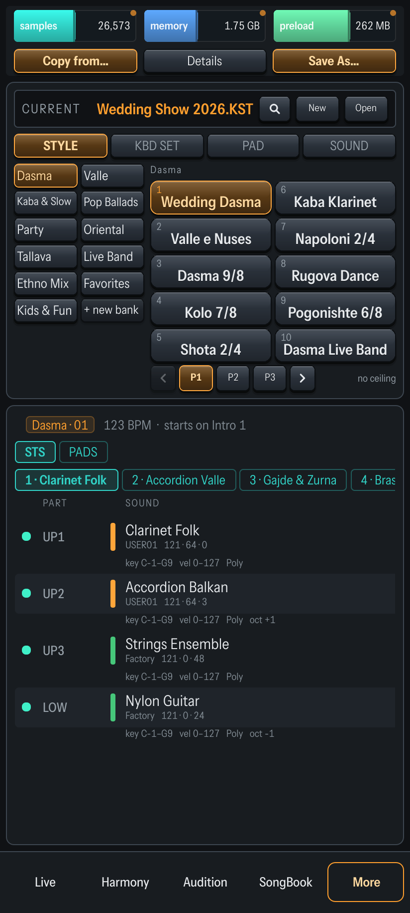

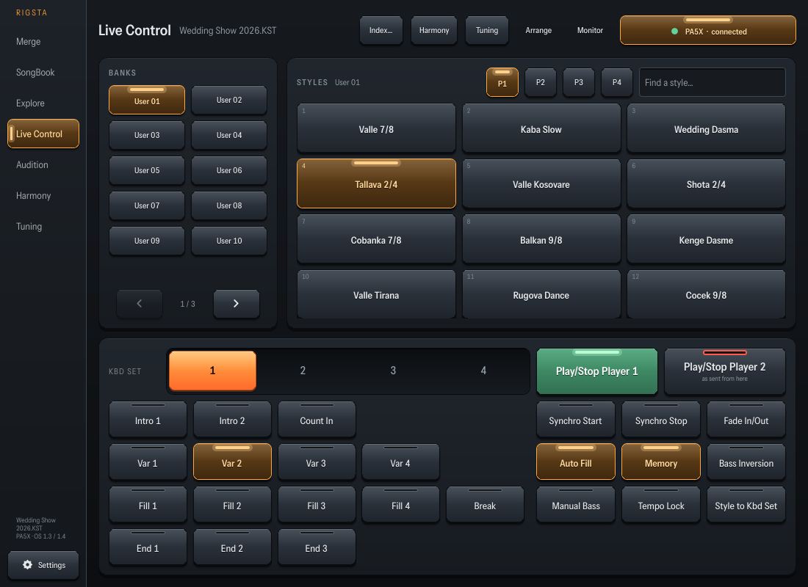

| PC (desktop) | Tablet | Phone upright | Phone on its side | |
|---|---|---|---|---|
| Which layout | a window 1200 px wide or more | narrower than 1200 px, and every Android tablet | narrower than 720 px | wider than tall and under 560 px high |
| Pages | the rail, left | the rail, left (narrower) | tabs along the bottom + More | a column of tabs, left, + More |
| Settings | ⚙ Settings, foot of the rail | ⚙ Settings, foot of the rail | More → Settings | More → Settings |
| Opens on | Merge | Live Control | Live Control | Live Control |
| Keys | mouse-sized | finger-sized | finger-sized | finger-sized |
| Details of an item | beside the list | beside the list | its STS under the set; Details for the rest | Details |
| Two sets on Merge | side by side | side by side (stacked when narrow) | one above the other; scroll | side by side, half each |
3.2 Getting around#
On a PC or tablet: the rail. The pages run down the left edge:
| Page | What it is for |
|---|---|
| Merge | Open sets, copy between them, delete, convert, Save As → 5 |
| SongBook | The SongBook's songs and set lists → 8 |
| Explore | Everything inside a style, keyboard set, pad or sound, and the sample library → 9 |
| Live Control | Play from the app: styles, STS, elements, transport → 11 |
| Audition | Hear a style's phrases on the keyboard, try other sounds → 14 |
| Harmony | A live second voice from your melody → 12 |
| Tuning | Scales and quarter tones, sent to the keyboard → 13 |
| ⚙ Settings | Look, layout, memory, keyboard, MIDI OUT → 15 |
The name of the set you work on sits at the foot of the rail, above Settings.
On a phone: the tabs. The pages you use on stage are one tap away:
- Live · Harmony · Audition · SongBook along the bottom.
- More opens a menu with Open a set… (or Open another set…), Tuning, Merge, Explore and Settings. More stays lit while you are on one of its pages.
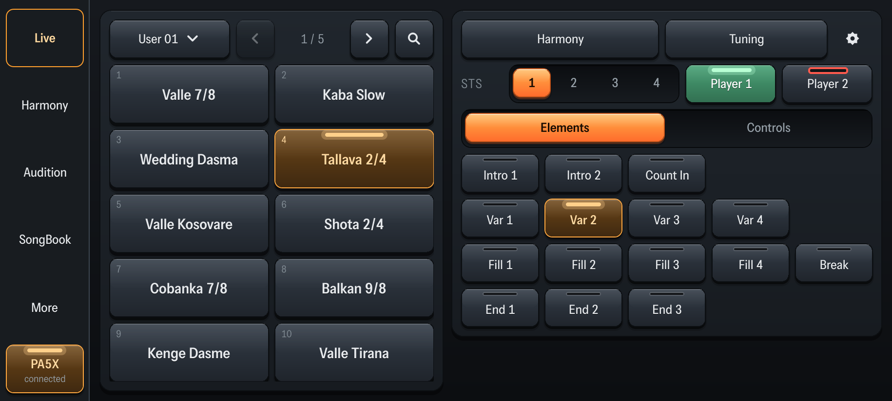
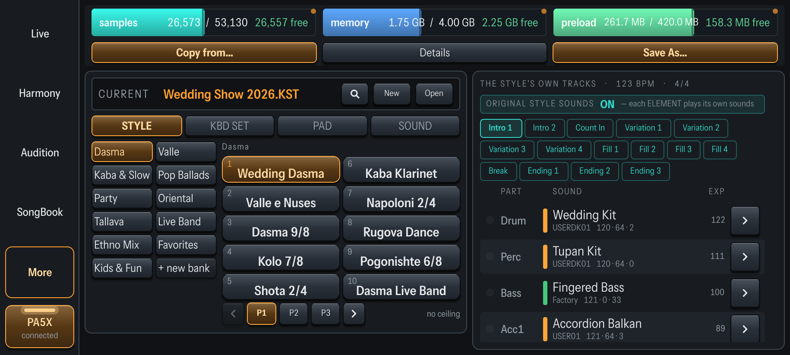
On a phone on its side, the same tabs run down the left edge, with More below them and the keyboard's connection key at the foot. The pages put things side by side instead of stacking them.
Sheets. Where a screen has no room for an item's detail, it slides in from the right as a sheet with a Close button:
| Page | The sheet | Opens when |
|---|---|---|
| Merge | the item's detail | you press Details (after picking a slot) |
| Explore | the item or record | you pick a row |
| SongBook | SONG | you tap a song |
| Audition | THE STYLE | you tap a style |
Panels such as Harmony and Tuning on Live Control open over the page. A tap outside closes them, unless you choose Stay until closed. → Settings → PANELS
3.3 Touch and mouse: every gesture#
| To… | With a mouse | With a finger |
|---|---|---|
| Pick a slot, tile, key or row | click | tap |
| Open a slot's or bank's menu (Copy, Paste, Replace, Delete) | right-click | long press |
| Copy an item or a bank between sets | drag it from COPY FROM onto your set | long press → Copy, then long press → Paste (or drag) |
| Turn a page of style tiles, banks, chords or scales | the arrows, the page keys, or drag sideways | swipe sideways: left for the next page, right for the one before |
| Scroll a page that does not fit | the wheel | drag up or down |
| Move along a sound's piano | drag the range bar | swipe the piano sideways, or drag the range bar |
| Show more or fewer piano keys | drag an edge of the range bar | drag an edge of the range bar |
| Hear a key, zone or sample | click it | tap it |
| Change a tempo, transpose or selection number | drag up or down, or the wheel; double-click to type | drag up or down; double-tap to type |
| Choose in a picker (sound, style, pad) | click, then Select; or double-click | tap, then Select; or double-tap |
| Switch a tuning key's quarter tone | — | long press the key |
| Close a sheet, panel or dialog | Esc, or click outside | tap outside, or Close / ✕ |
| Bring back the phone's system bars in full screen | — | swipe in from the screen's edge |
3.4 Where things are#
| I want to… | PC / tablet | Phone |
|---|---|---|
| Open a set | Merge → Open a set…, or Open on the set's panel | More → Open a set… |
| Open a set to copy from | Merge → Copy from… | More → Merge → Copy from… |
| Save As | Save As… on Merge or SongBook | the same, via More → Merge or the SongBook tab |
| See an item's full detail | pick it: it shows beside the list | pick it, then Details |
| Connect the keyboard | Settings → KEYBOARD, or the connection key on Live Control and Harmony | tap the connection pill: the KEYBOARD sheet opens |
| Make the Pa5X Live Control index | Index… on Live Control | tap the ⚠ notice → Make the index… |
| Harmony or Tuning while playing | Harmony / Tuning on Live Control | the same keys; the panel covers the styles, the deck stays |
| Change the theme, text size or layout | Settings | More → Settings |
3.5 Page by page#
- Merge. On a PC the two sets sit side by side, with the detail along the bottom and the gesture hints under it. On a phone upright they stack; scroll to the second. Pane titles shorten to CURRENT and FROM, search hides behind 🔍, and the item's detail opens with Details.
- Live Control. On a PC and tablet: banks on the left, styles in the middle, the deck below. On a phone: a bank button ▾ opens the banks; the deck sits under the styles, with Elements and Controls to switch its keys. On its side: styles left, deck right. The Monitor is on PC and tablet only.
- Harmony. Two columns on PC and tablet. On a phone, Play and Setup switch between playing and the sounds and routing.
- Tuning. On a tall screen the piano sits on top and the scales below; on a short one, scales left and piano right.
- Explore, SongBook, Audition. On narrow screens the detail becomes a sheet. The SongBook opens a song, a genre or a set list as its own page, with a back arrow.
- Pickers (sounds, styles, pads) fill the whole screen on a phone.
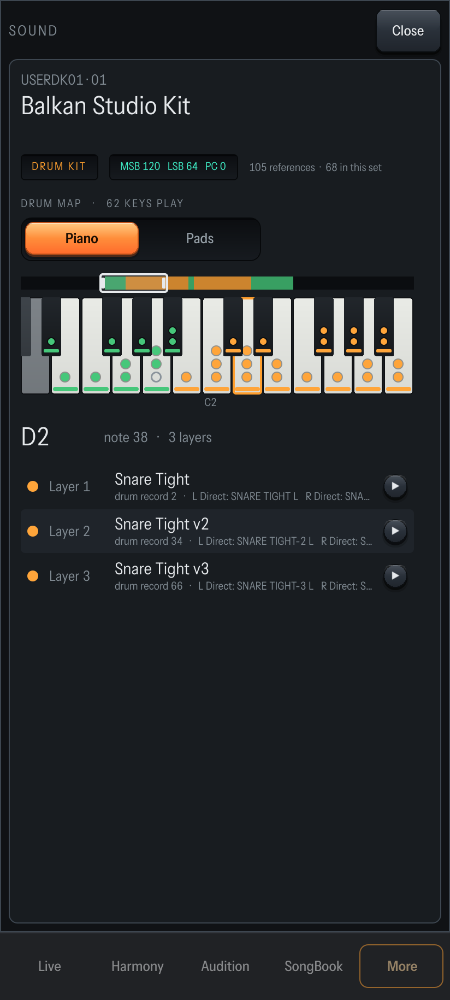
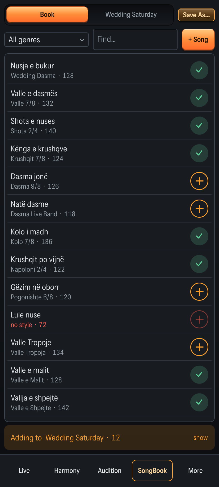
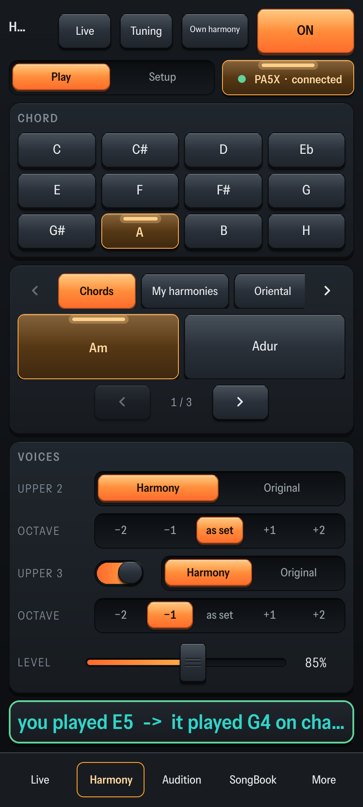
4. Opening a set#
To open one:
- On Merge, press Open a set… (or Open on the Current set panel). On a phone: More → Open a set….
- Choose the set folder and confirm.
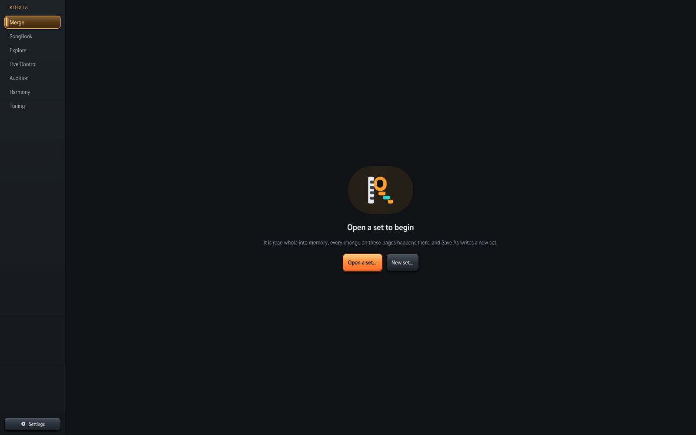
4.1 Protections when you open#
- Memory check. If the set may not fit in your device's free memory, Rigsta says so before reading it: "This set may not fit in memory." It shows how large the set is, how much it needs and how much is free. Choose Cancel or Open anyway.
- Unsaved changes. If the set you work on has changes no Save As has written yet, Rigsta asks: "The set has changes that are not saved." Choose Keep working on it or Lose the changes. It asks before opening another set or making a new one.
- Honest reading. If part of a set cannot be read (a damaged bank, say), Rigsta opens the rest and names what did not read. It never guesses at it and never writes into it.
4.2 Large sets on small devices#
Under Settings → MEMORY → SET AUDIO, Auto keeps a set's audio in memory when it fits, and otherwise leaves the audio on disk and reads it only when a merge or Save As needs it. Two large sets then fit side by side, even on a phone. → Settings
4.3 "Read as"#
Some Pa4X sets do not say clearly which OS generation made them. Rigsta then shows read as buttons, such as PA4X V2 or PA4X V3 / OS Next, so you can choose. It only offers the detected generation or a newer one.
5. The Merge page#
5.1 The memory gauges#
Across the top, three gauges measure the set against the keyboard's own limits:
| Gauge | Meaning | Pa4X limit | Pa5X limit (OS 1.3+) |
|---|---|---|---|
| samples | how many samples the set holds | 15,048 | 53,130 |
| memory | how much sample RAM they use | 1.5 GB | 4 GB |
| preload | the part of the audio loaded at start-up | 300 MB | 420 MB |
- A gauge turns orange above 90 % and red with OVER by … when the set would not load on the keyboard.
- A small dot means the limit is assumed from the OS, not stated by the set.
- Rigsta never lets a copy push the set past a limit. It stops and says which limit ran out.
5.2 The set panel#
The CURRENT SET panel shows:
- The set's name, with New and Open, and the model and OS it was made for.
- search… — type part of a name and press find. Rigsta searches every bank of the kind shown and jumps from match to match (i of N).
- Kind tabs: STYLE · KBD SET · PAD · SOUND.
- Bank groups: Styles Factory · Fav/User · Local; Keyboard sets Factory · User · Local; Pads HIT · SEQUENCE · Local · User; Sounds User sounds · Drum kits.
- Bank tiles, each with used/capacity. A full bank's count is red.
- The slot grid: ten slots a page, numbered down the left column and then the right. Page with P1 P2 … and the arrows.
Pick a slot to see everything about the item:
- A style: tempo and starting element; its four STS, each part with its sound, bank, MSB/LSB/PC, volume, key range and octave; its pads; the style's own tracks (Drum, Perc, Bass, Acc 1–5); and Elements · Chord Variations.
- A pad: the sound it plays and its settings.
- A sound: what it is and where it is stored. → Explore: a sound
Quick edits (in the set you work on, never in the copy-from set):
- ••• on an STS part, a pad or a style track opens a picker: Choose a sound or Choose a pad.
- rename… renames an STS (16 characters on a Pa4X, 20 on a Pa5X).
- replace… (Pa5X) puts a whole keyboard set into an STS, nested the way the keyboard does it.
Every edit is made in memory and reported: "Changed in memory -- Save As writes it."
5.3 Copying between two sets#

- Open the set you want to build (the current set).
- Press Copy from… and open the set you want to take from. It appears as COPY FROM.
- Pick the kind: STYLE, KBD SET, PAD or SOUND. Both panels switch together.
- Drag an item from COPY FROM:
- onto a free slot: it is copied at once;
- onto a taken slot: Rigsta asks whether to Replace it;
- while you drag, a ring shows what will happen: amber = copy, warning colour = replace, red = no room.
- Drag a bank tile onto a bank to copy the whole bank.
Or use the menus: right-click with a mouse, long press on a touch screen.
| Where | What you get |
|---|---|
| A slot in COPY FROM | Copy |
| An empty slot in your set | Paste name |
| A taken slot in your set | Replace with name · Delete… |
| A bank in COPY FROM | Copy whole bank |
| A bank in your set | Paste bank name · Delete every item of bank… |
| The + new bank tile (Pa5X) | New empty bank… · Paste name as a new bank |
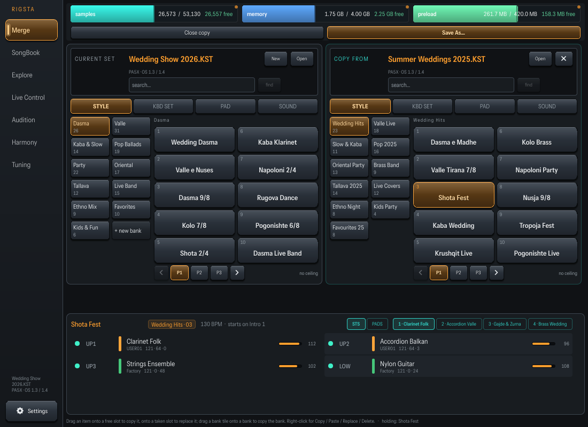
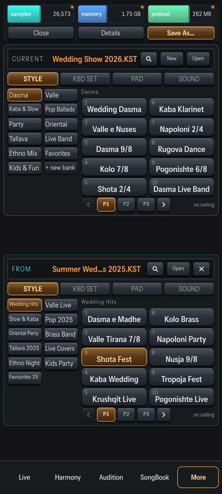
What travels with an item#
When you copy a style:
- Its sounds come with it, with every multisample, drum record and sample they need. Each sound is repointed to its new address.
- Its keyboard sets (STS) and pads come with it. A pad keeps its slot if it is free, otherwise it takes the next free one and the style is repointed.
- Nothing is copied twice. Sounds and samples your set already holds are reused, so more styles fit.
- Name clashes are never overwritten. A second Ballad arrives as Ballad(1), as the keyboard names it.
- Generations go up, never down. Copy from an older-generation set into a newer one and the samples are upgraded the way the keyboard upgrades them.
Each item moves whole or not at all. If one item cannot move, only that one is refused, with the reason; the rest go on. If the set runs out of room, Rigsta stops and names the limit.
Replacing an item#
Drop onto a taken slot and Rigsta asks Slot N of BANK holds 'X'. Replace it with 'Y'? Then choose what happens to the old item's data:
- Delete the slot entry only: its sounds, multisamples and samples stay in the set.
- Delete it with its own data: its sounds, multisamples, drum records and samples go too, but only those no other style, keyboard set or pad uses.
Copying a whole bank#
Drop a bank on a bank. If every target slot is free, it is copied at once. If not, choose Replace only the items in the way or Delete everything in the bank, then copy. On a Pa5X, drop a bank on + new bank to make a new bank of the same name.
5.4 Deleting#
Right-click (or long-press) a slot and choose Delete…, or a bank and choose Delete every item of…. Choose slot entry only or with its own data, as for a replace. The report lists what went, what was kept because something else uses it, and a WARNING naming anything that still points at what you deleted: songs, pad buttons, keyboard sets.
5.5 A new set, a new bank#
- New makes an empty set in memory, for PA4X V3 / OS Next (saved as
.SET) or PA5X 1.3 / 1.4 (saved as.KST). Copy into it from as many sets as you like, then Save As. It is the cleanest way to build a best-of set. - + new bank (Pa5X) adds an empty bank folder with the name you choose.
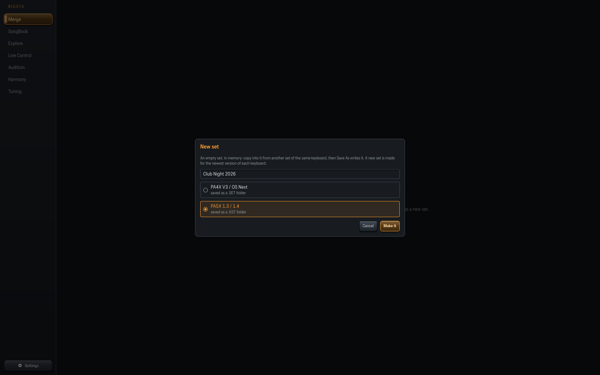
6. Converting a Pa4X set to Pa5X#
6.1 Converting the set you work on#
With a Pa4X set open as your current set, press To PA5X… (Convert to PA5X… on wide screens).
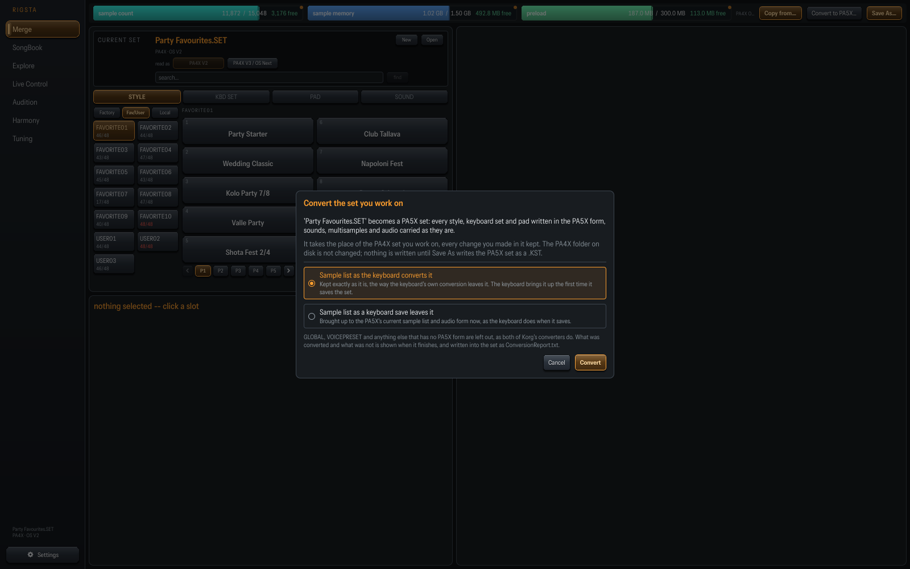
- Choose the sample list:
- Sample list as the keyboard converts it (the default): exactly what the Pa5X's own Convert leaves.
- Sample list as a keyboard save leaves it: brought up to the newest generation now, as the Pa5X does the first time it saves the set.
- Press Convert.
The converted set takes the place of the Pa4X set you work on, with every change you made in it. Merge more into it if you like, then Save As writes a .KST. Until then it counts as unsaved, so Rigsta asks before you open another set.
6.2 Converting the set you copy from#
When your current set is a Pa5X and the copy-from set is a Pa4X, the button reads Copy-from to PA5X… (Convert copy-from to PA5X… on wide screens).

Press Convert. The copy-from set becomes its Pa5X form in its own place on the right, and you copy from it as from any Pa5X set. Your current set is not touched.
6.3 What a conversion does#
- Every style is written in the Pa5X form, one file per style.
- Every keyboard set and pad is written in the Pa5X form.
- Sounds, multisamples and audio are carried exactly as they are.
- Bank names come from the set's own display names.
- The SongBook is converted. References to factory styles point at the Pa5X's own factory styles, using Korg's correspondence.
- What has no Pa5X form is left out: GLOBAL and VOICEPRESET, as both of Korg's converters do, and anything else that cannot be converted. Each is named in the report, never dropped silently.
- A ConversionReport.txt goes into the set, as the keyboard writes one.
6.4 On a phone or a small tablet#
A conversion briefly holds a second copy of the set. Rigsta checks the room first:
- The copy-from set: if a second copy of its audio does not fit, Rigsta reads the set again from its folder with its audio left on disk, and converts that. Only a few tens of MB are needed; the audio is read when a copy needs it.
- The set you work on: its edits are only in memory, so it cannot be read again. If it does not fit, Rigsta says so and shows the way: Save As first, choose Settings → SET AUDIO → Read from disk, open the saved set, and convert it.
7. Save As#
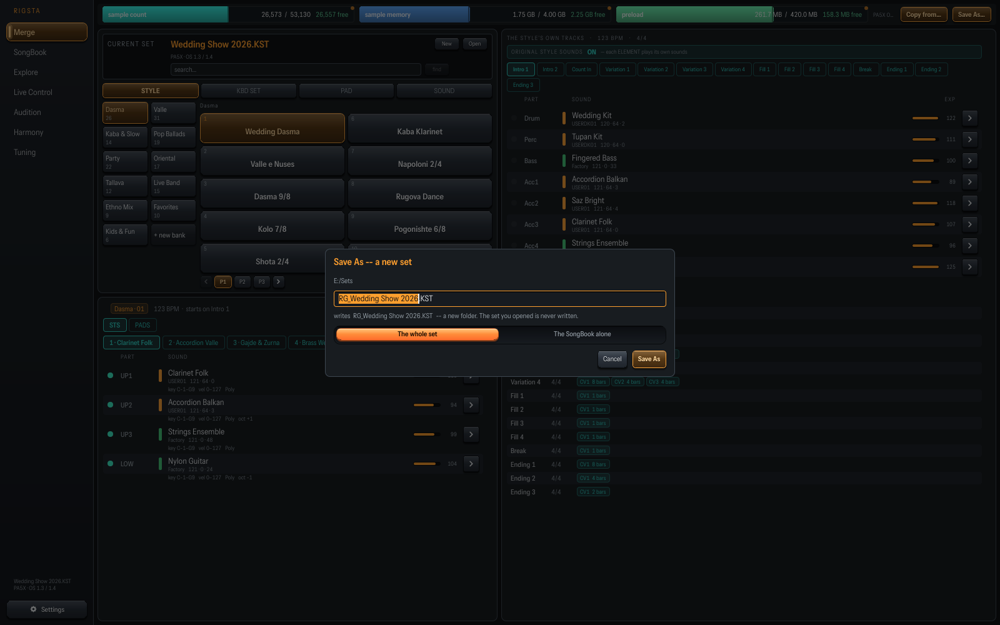
- Choose the folder the new set goes into (your USB stick, for example).
- Give it a name. Rigsta suggests
RG_and your set's name, with its extension:RG_My Show.KST. Once the Live Control index is in the set, it suggestsRG_Index_:RG_Index_My Show.KST. → 11.3- The extension is in the box, and the line under it shows exactly the folder that will be written.
- Type the extension or leave it off: either way the folder gets one, the right one for the keyboard (
.KSTfor a Pa5X,.SETfor a Pa4X), never two.
- Choose The whole set or The SongBook alone.
- Press Save As.
What makes Save As safe:
- Nothing is overwritten. Save As refuses an existing folder, and never writes into the set you opened, the set you copied from, or any set you took items from.
- All or nothing. Rigsta writes into a hidden folder and gives it its name only when every file is complete.
- Checked before it is named. Every file is read back and compared byte for byte; every sample is checked to name its own audio.
- Untouched stays untouched. A set opened and saved without changes comes out identical, file for file. Every folder and file of the set goes into the new one, including the ones Rigsta does not edit.
The SongBook alone writes only the SONGBOOK folder, the fastest way to update songs on a keyboard that already holds the rest of the set.
To load the result, copy the new folder to a USB stick; on the keyboard use Media → Load and load the whole set (or just the SongBook).
8. The SongBook page#
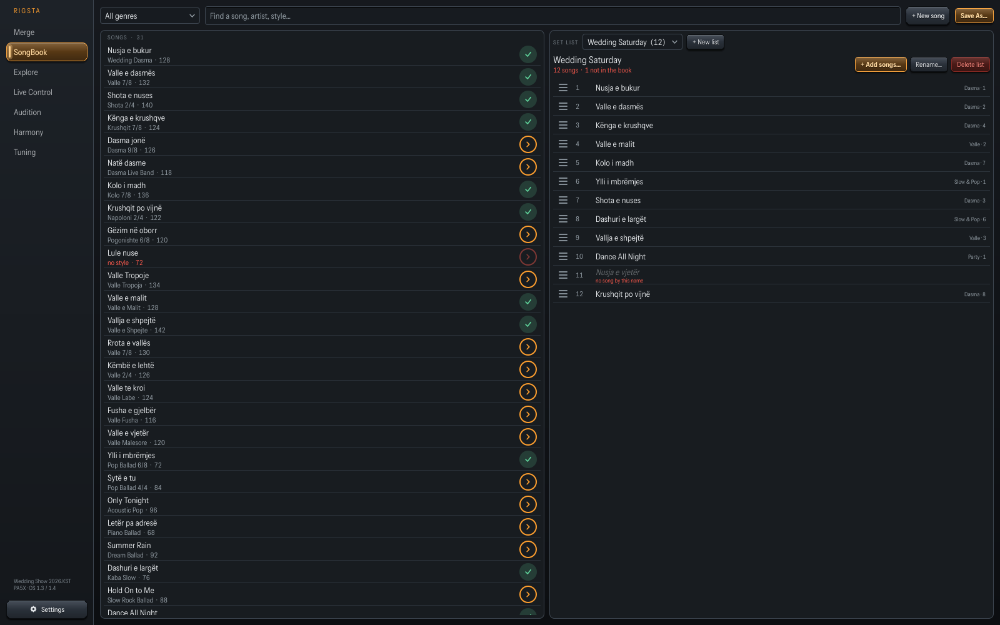
Rigsta keeps a SongBook as one list of songs, the way the keyboard shows it -- not as separate banks. The search at the top matches a song's name, artist, genre or style. Down the side are All songs, your genres, and your set lists.
8.1 A song's fields#
Pick a song to see its fields -- in a side panel on a PC, a full page on a phone:
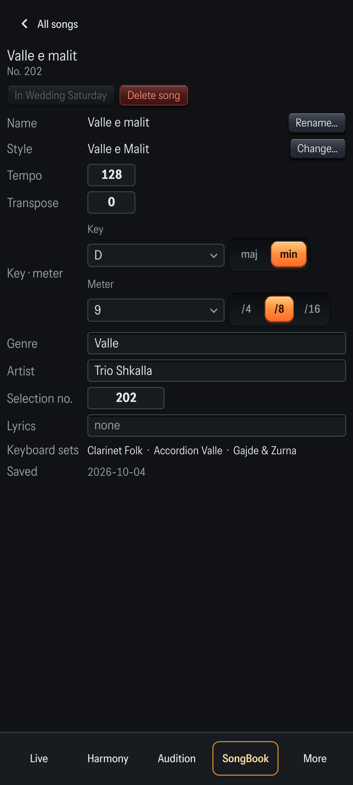
- Name -- Rename…. Rigsta fixes any set-list rows that would break, since set lists find songs by name.
- Style -- Change… points the song at another style of the set. A song with no style reference shows no style in red.
- Tempo (30-300), Transpose (±24), Selection no. (0-9999).
- Key -- a root (C … B) and maj / min, or none. It is chosen, not typed, so it is always a key the keyboard can store.
- Meter -- the beats (1-16) and the note value (/4, /8 or /16).
- Genre, Artist, Lyrics -- these save as you type: a moment after the last key, or when you move to another field.
8.2 Add a song#
+ New song opens a picker of styles -- the styles in this set, plus the Pa5X factory styles, in banks and pages like the keyboard. Pick one, and a new song is made with that style and its settings, named after the style. Then edit its name, tempo and the rest.
8.3 Set lists#
Make a list with + New beside SET LISTS, name it, then add songs to it. In the Builder layout the song list and the open set list sit side by side: the arrow beside a song adds it to the list, and you drag the rows into order. A song that cannot go in -- it has no style, or a name the keyboard would not find -- shows a faded red arrow; hover or long-press it to see why.
8.4 The layout, and the banks#
Choose how the SongBook looks in Settings → SONGBOOK: Builder (the default -- the list and a set list side by side), Library (the list with the song in a side panel), Sheet (every field a column, edited in place), or Classic.
Behind the scenes a SongBook is kept in banks of fifty songs, but you do not need to think about them. For advanced use, Settings → SONGBOOK → Show the song files (banks) brings the banks back as a FILES rail.
9. The Explore page#
Pick the kind with the chips at the top: STYLE · KBD SET · PAD · SOUND · SAMPLES. The list is on the left; the item picked is on the right (in a sheet on a narrow screen).
9.1 A style#
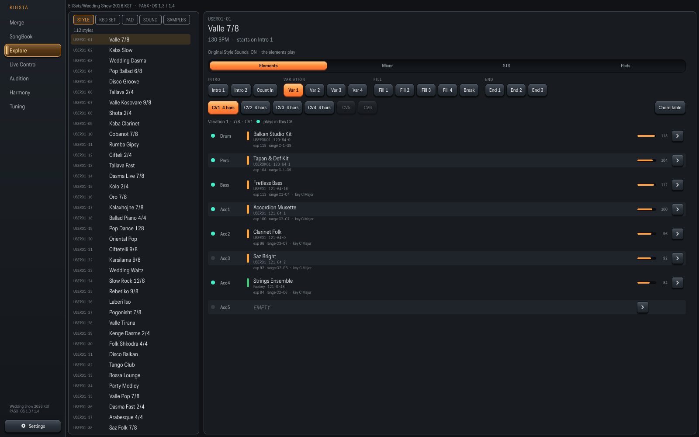
A style opens on four tabs:
- Elements: pick an element (Intro · Variation · Fill · End) and a chord variation (CV1–CV6). Each track shows the sound it plays there, with its level, range and key; › changes the sound. Chord table shows which chord variation plays for each chord.
- Mixer: the style's eight tracks as channel strips.
- STS: the four keyboard sets, each part with its sound, with change…, rename…, and on a Pa5X replace with a keyboard set….
- Pads: the style's pads, with change….
9.2 A sound: its zones and drum keys#
A melodic sound shows its oscillators and each multisample as a map on a piano: every zone is a span over its keys, in the colour of where its sample lives. The zones are listed below with their key range and sample. Tap a key or a zone to hear its sample.
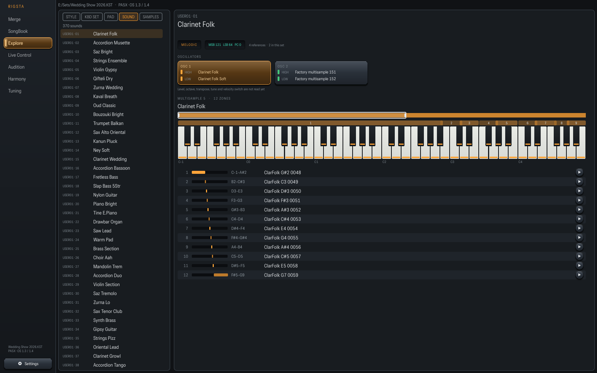
A drum kit shows its DRUM MAP: which keys play, and what each plays. Switch between Piano and Pads. Tap a key to see its layers and hear them.
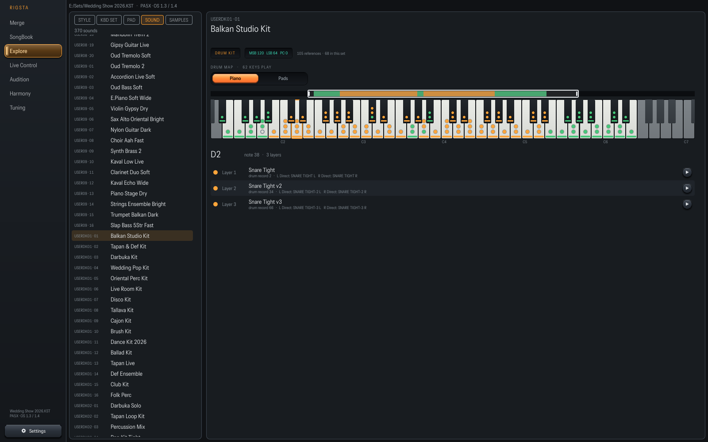
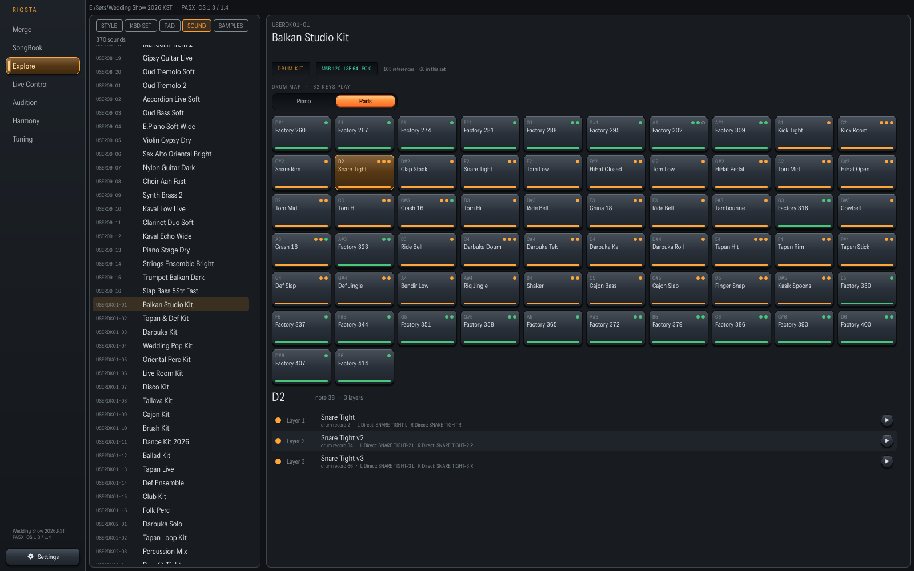
The piano and its range bar. The bar above the piano shows the part of the keyboard in view:
- drag inside the box to move along the keyboard;
- drag an edge to show more or fewer keys (never fewer than an octave);
- tap outside the box to jump there;
- or swipe the piano itself sideways.
9.3 The sample library#
Choose SAMPLES, then SAMPLES · MULTISAMPLES · DRUMS · KITS:
| List | Each entry | Picked, it shows |
|---|---|---|
| SAMPLES | a sample: its audio | its waveform, loop, rate and length, and a key to play it |
| MULTISAMPLES | a set of zones across the keyboard | its zones on the piano, and the sounds that play it |
| DRUMS | a drum record: up to four samples (direct and ambience, left and right) | its samples, played as a pair or one by one, and the sounds that play it |
| KITS | a drum-kit sound | its drum map |

The colours say where a sample lives, the same on every list, piano and map:
| Colour | Means |
|---|---|
| Green | factory: the keyboard's own ROM |
| Amber | your own: in this set |
| Red | locked: protected audio. The keyboard plays it; Rigsta cannot. |
| Deep red | unused: no sound of the set plays it |
| Outline only | empty: no sample at all. Those keys are silent (the keyboard shows Empty). |
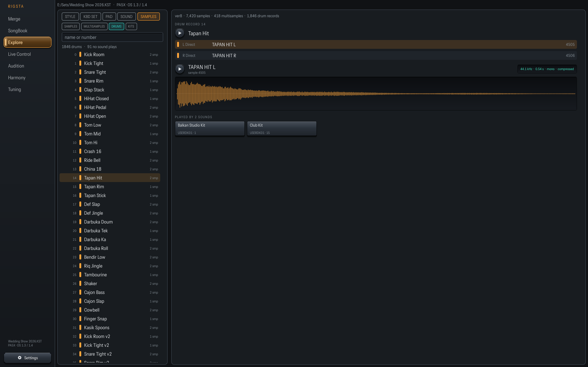
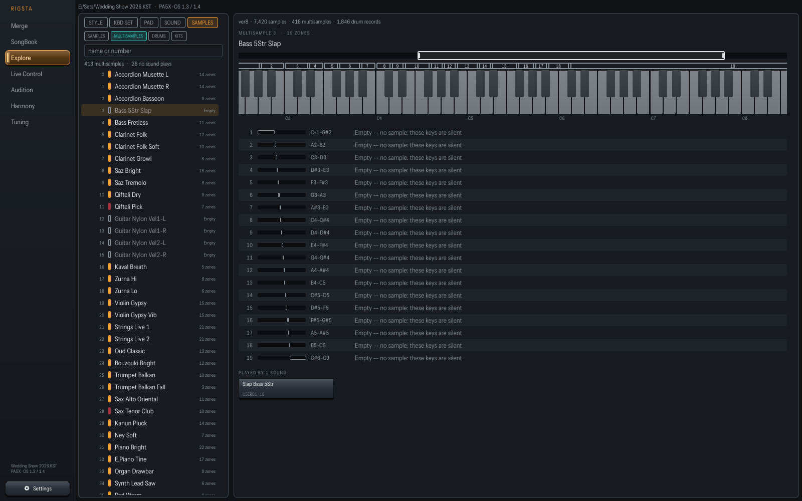
PLAYED BY lists the sounds that use a record. Tap one to open that sound. No sound in this set plays it marks a record nothing uses.
10. Connecting your keyboard#
Live Control, Harmony, Tuning and Audition talk to the keyboard over MIDI. Set this up once; Rigsta remembers it.
10.1 The cable#
- PC or Android device ↔ keyboard: a USB cable from the keyboard's USB Device port (the square "B" type).
- A phone or tablet needs a USB OTG adapter. Android also sees Bluetooth MIDI devices.
- Windows sets the keyboard up by itself. Its ports appear with names like Pa5X _ KEYBOARD.
- On Windows, only one program can use a MIDI port at a time. Close other MIDI programs first.
10.2 Choose the ports in Rigsta#
Open Settings → KEYBOARD. A small copy sits in the title row of Live Control and Harmony; on a phone, tap the connection pill and the KEYBOARD sheet opens.
- To keyboard: the keyboard's MIDI output port (Rigsta → keyboard).
- From keyboard: the keyboard's MIDI input port (keyboard → Rigsta). Harmony and the lights on Live Control need it.
- Control ch: leave it at 5 (the default). It must stay outside channels 9–16 — Audition plays the style tracks there, so a Control channel of 16 would clash with it.
- Rescan if you plugged the keyboard in after starting Rigsta.
Rigsta asks the keyboard what it is, and the pill shows, for example, PA5X · connected:
| Dot | Meaning |
|---|---|
| 🟢 green | both directions open |
| 🟠 amber | sending only: choose From keyboard too |
| 🔴 red | nothing open |
If the keyboard does not say what it is, choose PA4X or PA5X yourself, or press Ask it. Rigsta remembers your ports even when Windows renames them, and reconnects by itself when the keyboard comes back on.
10.3 Set up the keyboard#
One MIDI preset serves every page. Rigsta's pages don't share one set of channels: Harmony plays the Upper and Lower parts on channels 1–4, Live Control talks on a Control channel, and Audition plays a whole style on the style tracks, channels 9–16. No stock Pa5X preset carries all three at once — Studio Control has the parts but not a Control channel, Tablet has Control but not the parts or the style tracks — so you build one custom preset and select it once.
On the Pa5X: Settings → MIDI. The quickest start is the Studio Control preset (it already puts Upper 1–3 and Lower on channels 1–4); set the channels below, then save it (page menu → Save MIDI Preset) under a name like Rigsta. On the Pa4X, the same channels live under Global → MIDI.
MIDI IN — what the keyboard accepts from Rigsta:
| Channel | Assign to | Used by |
|---|---|---|
| 1 | Upper 1 | Harmony — the melody sound |
| 2 | Upper 2 | Harmony — the harmony voice |
| 3 | Upper 3 | Harmony — the second voice |
| 4 | Lower | Harmony — the Lower sound |
| 5 | Control | Live Control |
| 9 | Style — Bass | Audition |
| 10 | Style — Drum | Audition |
| 11 | Style — Percussion | Audition |
| 12–16 | Style — Acc 1 … Acc 5 | Audition |
Leave channels 6, 7, 8 off. The style order matters: Bass on 9, Drum on 10, Percussion on 11 — Studio Control's own order is Drum/Perc/Bass, so change channels 9–11 to Bass/Drum/Perc or Audition will play the wrong tracks.
MIDI OUT — what the keyboard sends back to Rigsta:
| Channel | Assign to | Used by |
|---|---|---|
| 1 | Upper 1 | Harmony — your right hand becomes the melody it harmonizes |
| 2 | Upper 2 (optional) | lets Rigsta warn you if Upper 2 is still switched on |
| 5 | Control | Live Control — the deck's lights follow the keyboard's own buttons |
Turn Clock Send → On so Live Control knows when a style plays and the Start key blinks in time. Leave every other OUT channel Off — in particular Upper 2 and Upper 3, so the harmony Rigsta sends is not echoed back.
Last, set Rigsta's Control ch (Settings → KEYBOARD) to 5, matching the preset. That is the whole setup — the same preset now serves Live Control, Harmony and Audition with no switching.
Harmony — two ways to play (the Harmony page shows them under How to set the keyboard…):
- ONE PART: melody and harmony play in one sound — play Upper 1, Rigsta adds the harmony to the same part.
- UPPER 2: the harmony plays in its own sound (Upper 2, channel 2). Then switch Upper 2 OFF on the panel: Rigsta still plays it, your keys no longer do.
Keep the keyboard's Scale on Equal, unless you use Tuning.
10.4 What Rigsta may send#
Settings → MIDI OUT switches whole kinds of messages off, on every page: Program Change · Bank Select · Control Change · Notes · Pitch Bend · SysEx. Use it to be sure the app never changes a sound or a setting during a show.
11. Live Control#
11.1 Open the set that is on the keyboard#
Live Control shows the styles of the set you have open. Open the same set that is loaded on the keyboard; if they differ, Rigsta tells you. The deck (elements, STS, transport) works with no set open.
11.2 The page#
- BANKS: the style banks of the set. On a phone, the bank button ▾ opens them.
- STYLES: the styles of the bank picked. Swipe or use the arrows to turn pages; the find key searches every bank. Tap a tile and the keyboard puts that style up.
- The deck:
- STS 1 · 2 · 3 · 4.
- Start/Stop (Pa4X) or Player 1 / Player 2 (Pa5X).
- Intro 1, Intro 2, Count · Var 1–4 · Fill 1–4 · Break · End 1–3.
- Synchro Start, Synchro Stop, Fade In/Out, Auto Fill, Memory, Bass Inversion, Manual Bass, Tempo Lock, Style to Kbd Set. On a phone, Elements and Controls switch between the two groups of keys.
The Start key turns green and blinks with the keyboard's clock while the style plays. The current Variation and any pending Intro, Fill or Ending are lit.
Arrange the deck. Arrange in the title row (a gear key on a phone) lets you drag any element or control key to another place in its group: onto another key they swap, onto an empty place it moves. The order is kept per keyboard (Pa5X / Pa4X); Reset layout puts the keyboard's own order back.
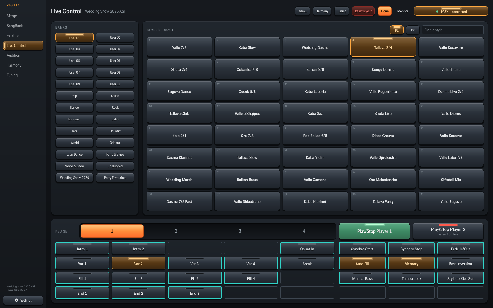
11.3 Pa5X: the Live Control index#
The Pa5X takes a style from outside only through a numbered SongBook entry. Rigsta makes those entries for you:
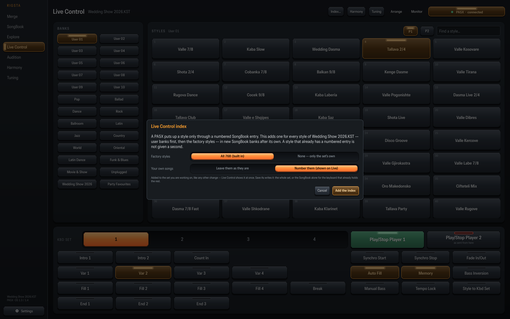
- Press Index… on Live Control (on a phone: tap the ⚠ notice, then Make the index…).
- Choose Factory styles (All (built in) or None -- only the set's own) and Your own songs (Leave them as they are or Number them).
- Press Add the index. Every style gets a numbered entry, in new SongBook banks after your own.
- Save As → The SongBook alone, and load that SongBook onto the keyboard.
From then on, every style tile works on the Pa5X. You never see or type the numbers. A Pa4X needs no index.
11.4 Panels over Live Control#
Harmony and Tuning open as panels, so you can change the harmony chord or the scale without leaving the styles. The Harmony panel lists the built-in harmonies and your own; the Tuning panel lists the set's scale memories and your own scales -- a tap puts one up. On a phone they cover the styles and leave the deck free.
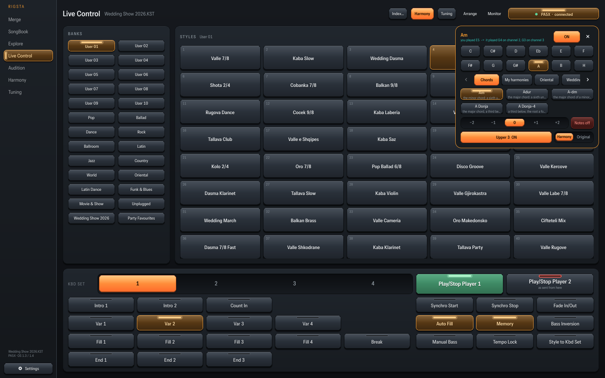
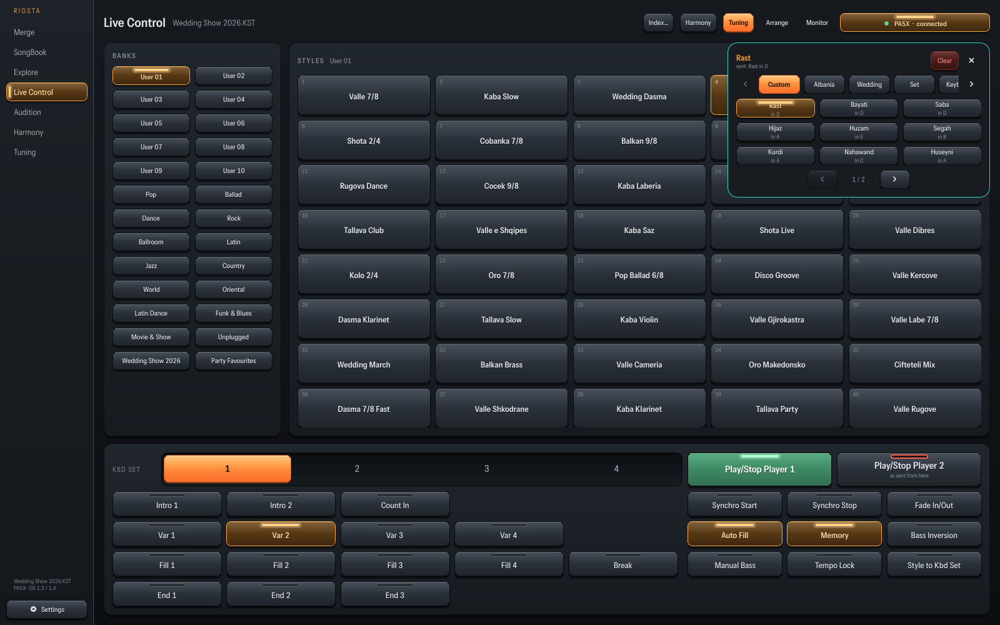
Monitor (PC and tablet) shows every message sent and received.
12. Harmony#

12.1 How it works#
- You play a note. The keyboard plays it and sends it on MIDI OUT (channel 1).
- Rigsta works out the harmony note for the key and scale, and sends it back on MIDI IN (channel 2 for Upper 2, or channel 1 in One part).
- Every note gets its own interval: harmony follows the scale, it is not a fixed shift.
- A released note always releases its harmony note.
- Sustain, soft and sostenuto pedals, modulation, expression and pitch bend follow the melody.
- The harmony's level is a share of your playing (10 %–150 %).
12.2 Playing#
- Set up the keyboard for One part or Upper 2 and choose the same under ROUTING. → 10.3
- Choose the CHORD: the root (Balkan spelling: H for B) and the type:
| Type | What you hear |
|---|---|
| m (e.g. Am) | the minor chord: a sixth under the melody |
| dur (e.g. Adur) | the major chord: a sixth under the melody |
| X-ym (e.g. E-am) | the major chord of a minor key (hijaz): a sixth under |
| Donja | the major chord, a third below |
| Donja-4 | a third below, the root a fourth below |
- Press the big ON button and play.
- NOW PLAYING confirms it: you played A4 -> it played C4 on channel 2.
- VOICE: shift the harmony an octave (−1 · as the set · +1) and set its LEVEL (drag the fader).
- SOUNDS (Pa5X): choose Upper 1, 2, 3 and Lower with Choose….
- All notes off silences any hanging note.
On a phone, Play shows the chord and voices; Setup shows the sounds and routing.
12.3 Your own harmonies#
The built-in harmonies (m, dur, Donja …) work in any key. You can build your own the same way and save them, on the Own harmony panel of the Harmony page.
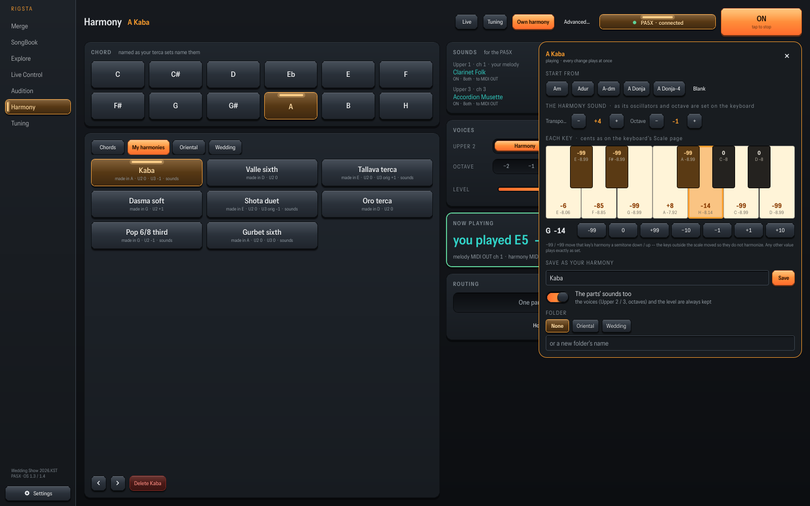
You build one as you would tune a terca keyboard set:
- Start from one of the built-in harmonies (copied exactly) or from blank.
- Set the harmony sound's transpose (its oscillators, −24…+24) and octave.
- Set each key's cents, as on the keyboard's Scale page -- any value −99…+99. Under each key, Rigsta shows the note it plays and the exact distance, so a value like −50 sounds a quarter tone off.
A saved harmony keeps the key it was made in and plays in any key, like the built-in ones -- together with the voices (Upper 2 and 3), the octaves, the level and, if you want, the sounds. Your harmonies appear under My harmonies with your folders, and the lit one moves earlier or later with < >.
The Live panel on the Harmony page lets you pick a style and press Start, Variations and STS without leaving Harmony.
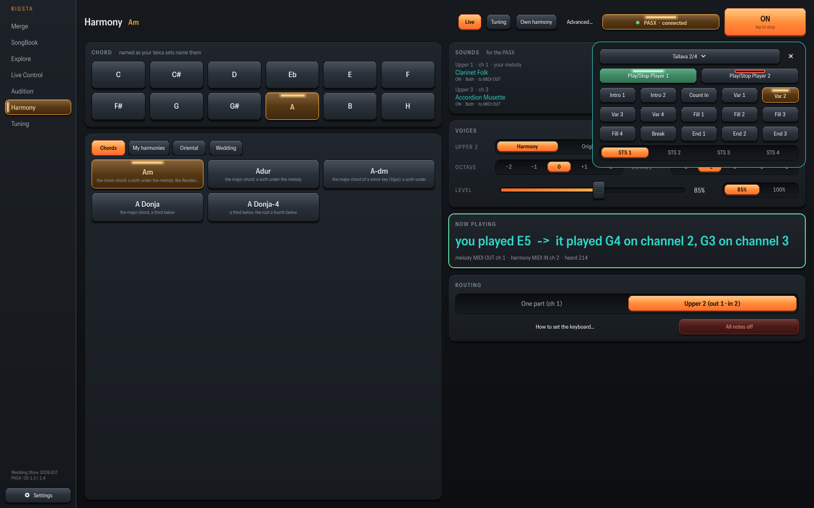
13. Tuning#

13.1 Choosing a scale#
The SCALES list has three tabs:
- Custom: your own scales, kept in Rigsta. It opens first.
- Set: the scale memories stored in the set you have open. Save all as custom keeps them in Rigsta for good.
- Keyboard: the keyboard's own scales, Equal, Pure Major, Pure Minor, Arabic, Pythagorean, Werckmeister, Kirnberger, Slendro, Pelog, Stretch.
With Live on, a scale tapped goes to the keyboard at once. Swipe the list sideways for more. A scale you save keeps the key it was written in, and the piano marks that key note with a dot.
13.2 Editing a scale#
The SCALE card shows a piano with each key's cents (−99 … +99):
- Tap a key to choose it, then −10 −1 +1 +10, ¼ −50 (a quarter tone flat), 0, or All 0.
- Long-press a key to switch its quarter tone on or off.
- Save… keeps it as a Custom scale by name. Send sends it now. Take it reads back what the keyboard plays.
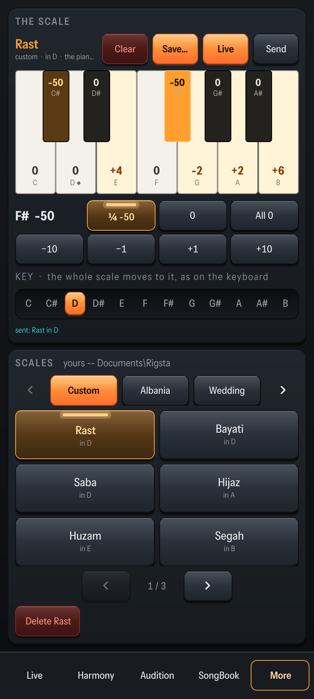
13.3 Clear#
Clear puts Equal back on the keyboard and every note to 0. It is one tap back to normal tuning, mid-show. The Tuning panel on Live Control and Harmony lists your scales; one tap puts a scale up.
14. Audition#
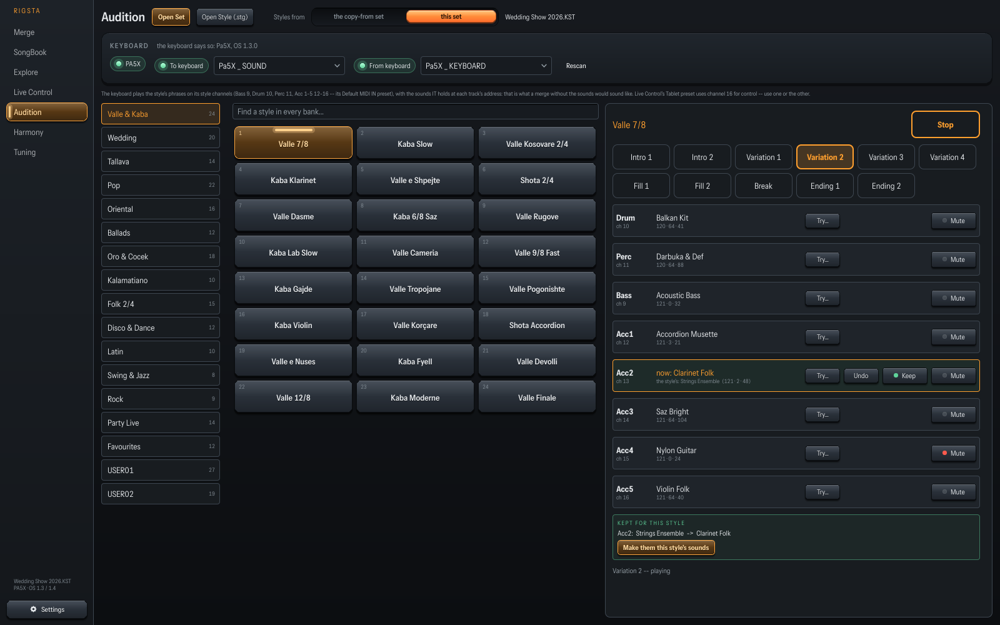
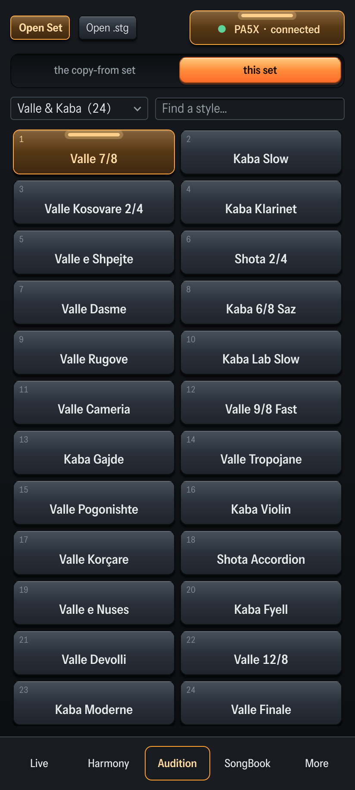
Audition plays on the style channels (Bass 9, Drum 10, Perc 11, Acc 1–5 on 12–16).
- Choose this set or the copy-from set.
- Pick a bank and a style. Find a style in every bank… searches everything.
- Tap an element to play it; tap another and it switches at the next bar. Stop stops.
- For each track: Try… another sound this set holds, Undo, Mute, Keep.
- Make them this style's sounds writes the kept sounds into the style, in memory.
15. Settings#
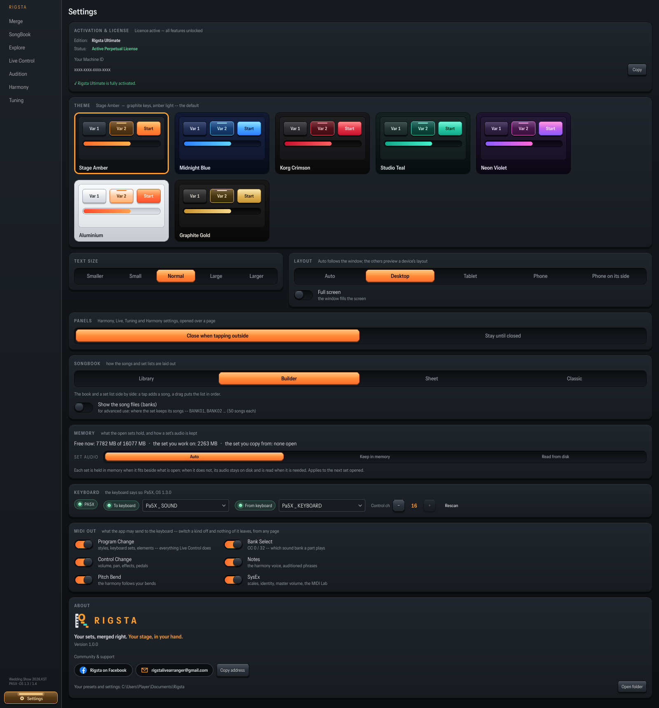
| Setting | Choices |
|---|---|
| THEME | Stage Amber (default) · Midnight Blue · Korg Crimson · Studio Teal · Neon Violet · Aluminium (for daylight) · Graphite Gold |
| TEXT SIZE | Smaller · Small · Normal · Large · Larger |
| LAYOUT | Auto (follows the window) · Desktop · Tablet · Phone · Phone on its side · Full screen |
| PANELS | Close when tapping outside · Stay until closed |
| SONGBOOK | Builder · Library · Sheet · Classic · Show the song files (banks) → 8.4 |
| MEMORY → SET AUDIO | Auto · Keep in memory · Read from disk |
| KEYBOARD | ports, Control channel, which keyboard → 10.2 |
| MIDI OUT | Program Change · Bank Select · Control Change · Notes · Pitch Bend · SysEx → 10.4 |
- LAYOUT. Auto follows the window. The others show a device's layout: on a PC, a phone or tablet layout is drawn in a frame in the middle of the window. Full screen hides the phone's bars (a swipe from the edge brings them back), or fills the screen on a PC.
- SET AUDIO. Keep in memory: every set is read whole, the fastest. Read from disk: the audio stays in the set folder and is read when a merge or Save As needs it; two large sets fit even on a phone. Auto: in memory when it fits, otherwise on disk. It applies to the next set opened.
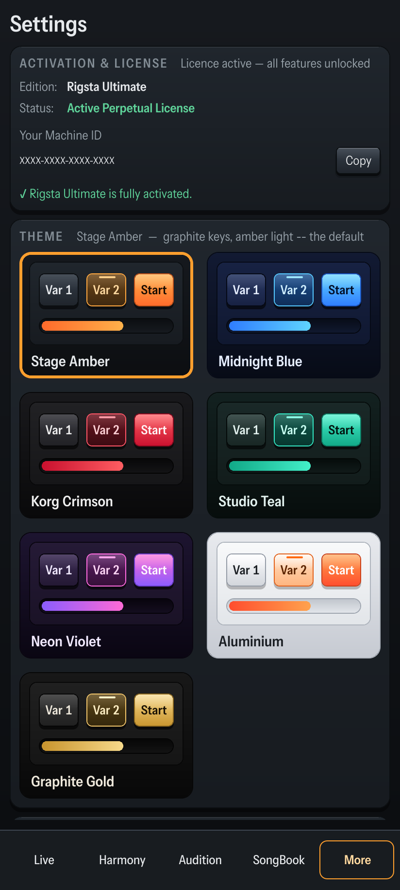
16. Troubleshooting#
| Problem | What to do |
|---|---|
| The style tiles do nothing on a Pa5X | The set needs the Live Control index, loaded on the keyboard → 11.3. Check the MIDI Preset is Tablet. |
| The Start light never shows | Turn Clock Send on at the keyboard, and choose From keyboard in Rigsta. |
| Harmony: "NOT HEARING THE KEYBOARD" | Choose From keyboard under Settings → KEYBOARD. |
| My keys play the harmony sound too | Switch Upper 2 OFF on the keyboard panel. Rigsta still plays it. |
| Tuning does not change the sound | The sound may be Fixed Scale. Turn the MIDI OUT filters off. Check Settings → MIDI OUT → SysEx is on. |
| "not sent -- no keyboard connected" | Choose To keyboard under Settings → KEYBOARD. |
| The ports are missing | Close other MIDI programs, reconnect the cable, press Rescan. |
| "This set may not fit in memory" | Close other apps, or choose Settings → SET AUDIO → Read from disk. |
| A copy is refused "set full" | The report names the limit. Delete unused items with their own data, or leave something out. |
| "items move only between two sets of the same keyboard" | Convert the Pa4X copy-from set first → 6.2. |
| "Not converted -- not enough memory" | Follow the steps it gives → 6.4. |
| A sample shows red, "locked" | It is protected audio. The keyboard plays it; Rigsta shows it but cannot play it. |
| Keys of a drum kit are silent | Their drum record holds no sample (outline only, Empty). The keyboard is silent there too. |
| Save As refuses the folder | Save As never overwrites. Choose a new name or folder. |
| I cannot find a page on my phone | Tuning, Merge, Explore and Settings are under More. |
17. Glossary#
| Term | Meaning |
|---|---|
| Set | A folder holding everything a keyboard loads: styles, keyboard sets, pads, sounds, samples, SongBook. .SET on Pa4X, .KST on Pa5X. |
| Current set / copy-from set | The set you work on, and the second set you take items from. |
| Style | An accompaniment: drums, bass and up to five accompaniment tracks, with Intros, Variations, Fills, Breaks and Endings. |
| STS / Keyboard set | Single Touch Settings: the sounds of Upper 1–3 and Lower, stored with a style (four per style) or on their own. |
| Pad | A one-shot or looping phrase on the keyboard's pad buttons. |
| Sound | An instrument, built from multisamples or drum records, which point at samples. |
| Multisample | Zones across the keyboard, each playing one sample. |
| Drum record | What one drum-kit key plays: up to four samples (direct and ambience, left and right). |
| Sample | A piece of audio. Factory samples live in the keyboard's ROM; your own live in the set. |
| Sample RAM / Preload | The keyboard's memory for your audio, and the part loaded at start-up. |
| SongBook | The keyboard's song database. Each entry recalls a style with its settings. |
| Selection number | A SongBook entry's number, used to call it up by MIDI. |
| Control channel | The MIDI channel on which the keyboard takes remote commands (16 in the Tablet preset). |
| Sheet | A detail that slides in from the right on a narrow screen, closed with Close. |
| Terca | A Balkan term for a harmony voice a third (or sixth) from the melody. |
Rigsta is an independent product and is not affiliated with or endorsed by Korg Inc. Korg, Pa4X and Pa5X are trademarks of their respective owners.